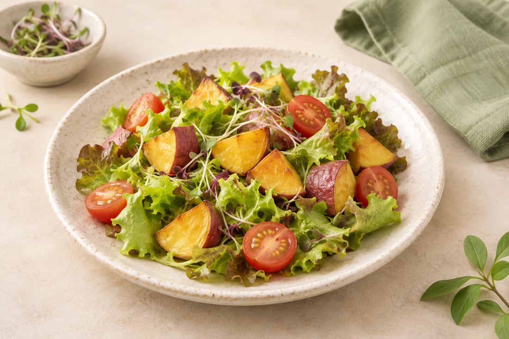
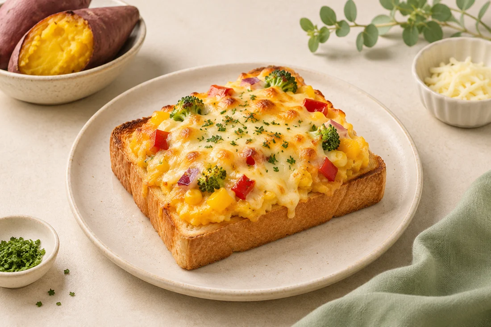
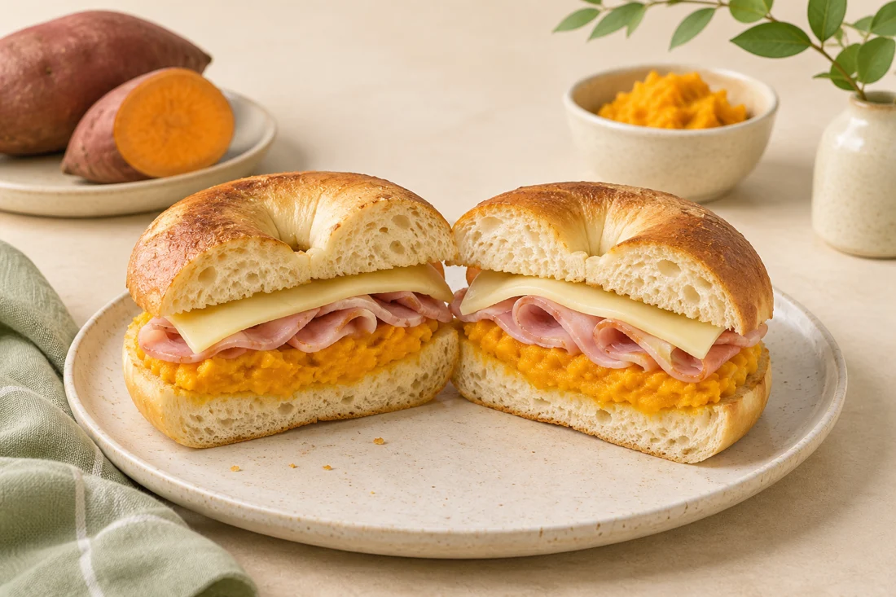

고구마 제품 활용법
고구마 가공품으로 간식부터 한 끼 메뉴까지 만들어 보세요.

설레고
군고구마 샐러드
자연해동한 설레고를 양상추, 새싹채소, 방울토마토 위에 올리고 드레싱을 곁들입니다.

떠먹고
고구마피자 토스트
따뜻하게 데운 떠먹고를 빵 위에 올리고 취향에 맞는 토핑을 곁들입니다.

바르고
고구마 페이스트 베이글
구운 베이글에 데운 바르고를 바른 뒤 햄과 치즈를 얹고 반으로 잘라 냅니다.
맛탕고
고구마 닭볶음탕
맛탕고를 따뜻하게 구운 뒤 닭볶음탕에 넣어 함께 볶습니다.
이미지는 AI로 생성한 조리 예시입니다.